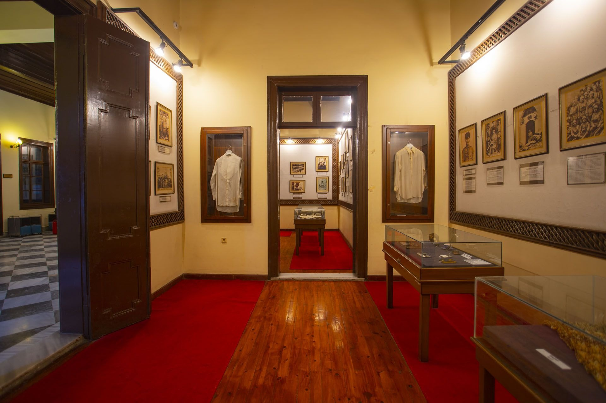

|  |
Mersin’in en önemli ve işlek caddelerinden biri olan “Atatürk Caddesi” üzerinde kentin odak noktasında yer alan bu yapı 1897'de dönemin Almanya Konsolosu Bay Christman’ın Mersin’li Mavromati ailesinden bir bayanla evliliği nedeniyle konut olarak kullanılmak üzere yaptırılmıştır. Mimari bilinmemektedir. Halk zamanla, bu yapıyı Krisman (Krizman Konağı) demiştir. Daha sonralarda Mavromati ailesinin konağı olarak tanınmıştır.
1270 m2lik bir alan üzerinde yer alan yapı 1972 yılına kadar Tahinci ailesinin mülkiyetine kalmıştır. 1972 yılında ise Nebil Hayfavi tarafından satın alınmıştır ve 1976 yılına kadar Toros Koleji olarak hizmet vermiştir. 1976'dan sonra boş tutulan bu yapının adı aynı yıl belediye encümeninin aldığı bir kararla "Atatürk Evi'' olmuştur. 1980 yılında yapının kamulaştırılması kararlaştırılarak restorasyon çalışmaları başlatılmıştır.
1982 yılından itibaren de Kültür Bakanlığı'nın mülkiyetindedir. 1992 yılına kadar süren restorasyon çalışmalarında bir milyar liraya yakın harcama yapılmış ve bunun sonucu 12 Ekim 1992 tarihinde “Atatürk Evi ve Müzesi” olarak resmi açılışı yapılmıştır. Mersin Atatürk Evi ve Müzesi'nin alt katı "Fotoğrafları ve Belgelerle Atatürk Müzesi" olarak hazırlanmıştır. Ayrıca Ankara, Anıtkabir Müzesi'nden getirilen 22 adet kişisel eşyası da sergilenmektedir
1992 yılına kadar süren restorasyon çalışmalarında bir milyar liraya yakın harcama yapılmış ve bunun sonucu 12 Ekim 1992 tarihinde “Atatürk Evi ve Müzesi” olarak resmi açılışı yapılmıştır. Mersin Atatürk Evi ve Müzesi'nin alt katı "Fotoğrafları ve Belgelerle Atatürk Müzesi" olarak hazırlanmıştır. Ayrıca Ankara, Anıtkabir Müzesi'nden getirilen 22 adet kişisel eşyası da sergilenmektedir. Etnografik eserlerin sergilendiği üst katta salona açılan yedi odanın ikisi yatak odası, biri çalışma odası, dördü ise oturma odası olarak değerlendirilmiştir.
|